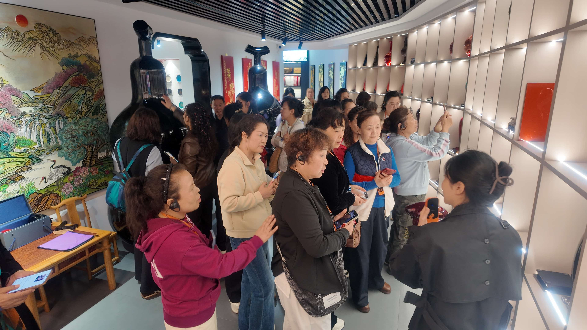

2026년 10월 15일, 친두구(秦都区) 2026년 고자질 농민 육성 향토문화 인재 과정 교육생들이 국칠박물관(龙头国漆 문화 전시관)을 방문해 '대칠 문화와 무형문화유산 전승'을 주제로 한 실천 교육을 진행했다.

교실을 무형문화유산 현장으로
향토문화 인재는 농촌 진흥에서 '떠나지 않는 팀'이다. 이번 과정은 이론과 실천을 결합해 농업·농촌에 밝고 지역 무형문화유산에도 익숙한 향토 중추 인재를 육성하는 것을 목표로 한다. 중국 생칠 문화를 보여주는 중요한 전시 창구인 국칠박물관은 옻나무 재배와 생칠 채취에서 칠 바름과 연마, 성형에 이르는 전 과정을 체계적으로 보여주며, 교육생들에게 몰입형 학습 공간을 제공했다.

'백 리 천 번의 칼질, 한 근의 칠'에서 산업의 뿌리를 읽다
전시실에서 교육생들은 해설사를 따라 생칠 원료와역대 칠기 정품, 현대 문창(文创) 제품을 차례로 관람하며 '백 리 천 번의 칼질, 한 근의 칠'이 지닌 희소성과, 산시(陝西) 핑리(平利) 우왕칠(牛王漆)이 국가급 명함으로 불리는 배경의 생태·산업 기반을 배웠다. 칠 바름, 묘금, 변도, 표칠 등의 기법으로 완성된 기물들은 '무형문화유산은 박물관의 진열품이 아니라 일상 속으로 들어갈 수 있는 것'이라는 이념을 구체적으로 느끼게 했다.
이해하고, 가져가고, 쓸 수 있게
실천 교육에서는 배운 것을 실제로 쓰는 데 초점을 두었다. 교육생들은 칠예 지식을 배우는 데 그치지 않고, 문화 자원을 어떻게 농촌 산업 발전의 동력으로 바꿀 것인가——무형문화유산 탐구 학습을 농촌 관광 코스에 어떻게 담을 것인가, 짧은 영상과 뉴미디어로 대칠 이야기를 어떻게 전할 것인가, 지역 농산물 포장과문창(文创) 디자인에 지역의 문화 기호를 어떻게 담을 것인가——에 관심을 모았다. 이 질문들은 현장에서 뜨거운 논의를 이끌어냈다.
전승에 팀과 그릇을
正大明은 앞으로도 진바(秦巴) 생칠 산업의 강점과 무형문화유산 전승자 자원을 살려 '무형문화유산+교육+산업'의 깊은 융합을 추진하고, 고자질 농민 육성과 향토문화 인재 팀 구축에 상시적인 지원을 제공할 것이다. 인재는 농촌 진흥의 첫 번째 자원이고, 문화는 농촌의 뿌리다——향토문화 인재를 산업 체인과 문화유산 현장에서 단련시키는 것은 무형문화유산 전승에 새로운 피를 넣는 동시에, '산업으로 문화를 기르고 문화로 산업을 일으킨다'는 농촌 문화 진흥의 실행 가능한 길을 여는 일이다.